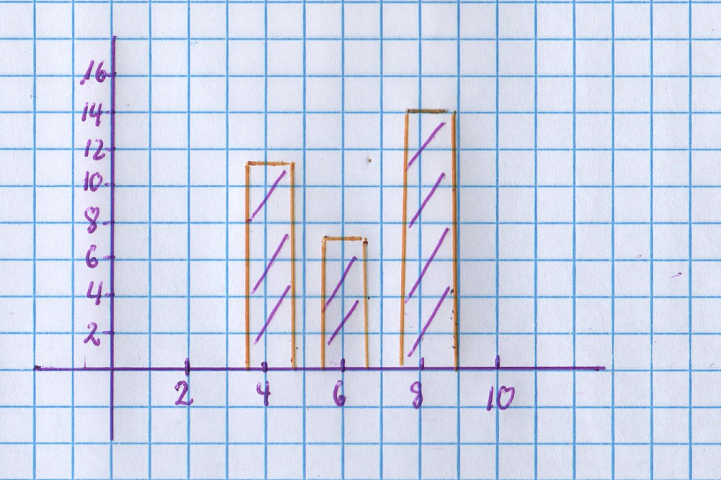
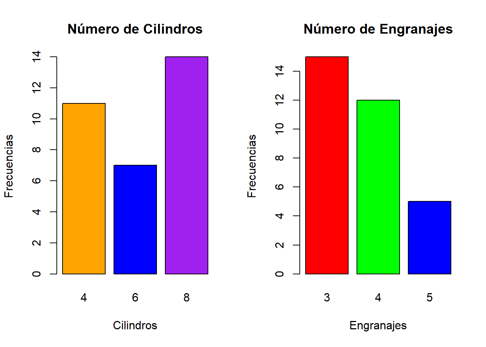

Diagramas de Barras
El diagrama de barras (Bar Chart) es un gráfico
estadístico que nos permite representar la distribución de frecuencias
de variables cualitativas y cuantitativas discretas; nuestro objetivo es
pasar del lápiz y papel al uso de los lenguajes de programación R
version 4.2.1 (2022-06-23 ucrt)(R Core Team,
2022) y Python 3.9.7(Van Rossum & Drake
Jr, 1995), recomendamos la lectura del libro El Arte
de Programar en R(Santana Sepúlveda et
al., 2014); compartimos la siguiente imagen como
referencia.

Data Set - mtcars
mtcars es un data set que ya viene precargado al
momento de instalar el lenguaje de programación R en
nuestro sistema, haremos uso de dicho data set para la creación de
distintos diagramas de barras, de las 11 variables y 32 observaciones
que lo componen nos enfocaremos en las variables cyl
(cilindro) y gear (engranajes) como se muestra a
continuación.
mtcars
summary(mtcars)
## mpg cyl disp hp
## Min. :10.40 Min. :4.000 Min. : 71.1 Min. : 52.0
## 1st Qu.:15.43 1st Qu.:4.000 1st Qu.:120.8 1st Qu.: 96.5
## Median :19.20 Median :6.000 Median :196.3 Median :123.0
## Mean :20.09 Mean :6.188 Mean :230.7 Mean :146.7
## 3rd Qu.:22.80 3rd Qu.:8.000 3rd Qu.:326.0 3rd Qu.:180.0
## Max. :33.90 Max. :8.000 Max. :472.0 Max. :335.0
## drat wt qsec vs
## Min. :2.760 Min. :1.513 Min. :14.50 Min. :0.0000
## 1st Qu.:3.080 1st Qu.:2.581 1st Qu.:16.89 1st Qu.:0.0000
## Median :3.695 Median :3.325 Median :17.71 Median :0.0000
## Mean :3.597 Mean :3.217 Mean :17.85 Mean :0.4375
## 3rd Qu.:3.920 3rd Qu.:3.610 3rd Qu.:18.90 3rd Qu.:1.0000
## Max. :4.930 Max. :5.424 Max. :22.90 Max. :1.0000
## am gear carb
## Min. :0.0000 Min. :3.000 Min. :1.000
## 1st Qu.:0.0000 1st Qu.:3.000 1st Qu.:2.000
## Median :0.0000 Median :4.000 Median :2.000
## Mean :0.4062 Mean :3.688 Mean :2.812
## 3rd Qu.:1.0000 3rd Qu.:4.000 3rd Qu.:4.000
## Max. :1.0000 Max. :5.000 Max. :8.000
var_cyl
summary(mtcars$cyl)
## Min. 1st Qu. Median Mean 3rd Qu. Max.
## 4.000 4.000 6.000 6.188 8.000 8.000
cyl_table <- sqldf("select cyl,count(cyl) as cantidad from mtcars group by cyl")
cyl_table
## cyl cantidad
## 1 4 11
## 2 6 7
## 3 8 14
var_gear
summary(mtcars$gear)
## Min. 1st Qu. Median Mean 3rd Qu. Max.
## 3.000 3.000 4.000 3.688 4.000 5.000
gear_table <- sqldf("select gear,count(gear) as cantidad from mtcars group by gear")
gear_table
## gear cantidad
## 1 3 15
## 2 4 12
## 3 5 5
var_carb
summary(mtcars$carb)
## Min. 1st Qu. Median Mean 3rd Qu. Max.
## 1.000 2.000 2.000 2.812 4.000 8.000
carb_table <- sqldf("select carb,count(carb) as cantidad from mtcars group by carb")
carb_table
## carb cantidad
## 1 1 7
## 2 2 10
## 3 3 3
## 4 4 10
## 5 6 1
## 6 8 1
Bar Chart - barplot()
La función barplot() nos permite crear diagramas de
barras (Bar Charts) en el lenguaje de programación R,
utilizaremos la variable cyl (cilindros) para crear el
gráfico estadístico respectivo, como se muestra en la siguiente
imagen.
x <- table(mtcars$cyl)
colores <- c("orange","blue","purple")
barplot(x,xlab="Cilindros",ylab="Frecuencias",main="Número de Cilindros",col=colores)
Bar Chart - ggplot2
ggplot2(Wickham, 2016) es un
paquete del lenguaje de programación que nos permite crear gráficos
estadísticos de gran calidad, haremos uso de la variable cyl
(cilindros) para la creación del gráfico estadístico
respectivo, como se muestra a continuación.
ggplot(mtcars,aes(cyl)) + geom_bar(fill=colores) + labs(x="Cillindros",y="Frecuencias",title="Número de Cilindros") + theme_dark()
Bar Chart - Lattice
Lattice(Sarkar, 2008) es un
paquete del lenguaje de programación R, que nos permite crear gráficos
estadísticos de muy buena calidad, nos enfocaremos en la variable cyl
(cilindros) para la creación del gráfico estadístico
respectivo, como se muestra a continuación.
barchart(x,xlab="Cilindros",ylab="Frecuencias",main="Número de Cilindros",col=colores,horizontal=FALSE)
mtcars - cyl & gear
A continuación, mostramos como unir dos diagramas de barras
(Bar Charts) en un solo gráfico, tomando como base el
data set mtcars, así como sus variables
cyl (cilindros) y gear
(engranajes).
y <- table(mtcars$gear)
par(mfrow=c(1,2))
barplot(x,xlab="Cilindros",ylab="Frecuencias",main="Número de Cilindros",col=colores)
barplot(y,xlab="Engranajes",ylab="Frecuencias",main="Número de Engranajes",col=rainbow(3))

Bar Charts - Matplotlib
Matplotlib(Hunter, 2007) es
una librería del lenguaje de programación Python, que nos permite crear
gráficos estadísticos de gran calidad, RMarkdown(Allaire
et al., 2022) nos permite trabajar con otros lenguajes de
programación tales como C++, SQL, Julia, entre muchos
otros; a continuación mostramos un diagrama de barras (Bar
Chart) creado con Matplotlib.
eje_x = ['Python', 'R', 'Node.js', 'PHP']
eje_y = [50,20,35,47]
plt.bar(eje_x, eje_y)
plt.ylabel('Cantidad de usuarios')
plt.xlabel('Lenguajes de programación')
plt.title('Usuarios de lenguajes de programación')
plt.show()
Bar Charts - Seaborn
Seaborn(Waskom et
al., 2017) es una librería de Python que nos permite crear
gráficos estadísticos de gran calidad, fue creada tomando como base
Matplotlib.
eje_x = [4,6,8]
eje_y = [11,7,14]
sns.barplot(x=eje_x,y=eje_y)
plt.title("Número de cilindros")
plt.xlabel("Cilindros")
plt.ylabel("Frecuencias")
plt.show()
YouTube - Tutorial
Compartimos el siguiente tutorial tomado de la plataforma
YouTube que muestra como crear diagramas de barras
(Bar Charts) haciendo uso de la función
barplot() y el paquete ggplot2 del
lenguaje de programación R.
embed_url("https://www.youtube.com/watch?v=EkxRj02iaLk&t=6s") %>%
use_align("center")
Referencias Bibliográficas
Allaire, J., Xie, Y., McPherson, J., Luraschi, J., Ushey, K., Atkins,
A., Wickham, H., Cheng, J., Chang, W., & Iannone, R. (2022).
Rmarkdown: Dynamic documents for r.
https://github.com/rstudio/rmarkdown
Hunter, J. D. (2007). Matplotlib: A 2D graphics environment.
Computing in Science & Engineering,
9(3), 90–95.
https://doi.org/10.1109/MCSE.2007.55
R Core Team. (2022).
R: A language and environment for statistical
computing. R Foundation for Statistical Computing.
https://www.R-project.org/
Santana Sepúlveda, S., Mateos Farfán, E., et al. (2014). El arte de
programar en r: Un lenguaje para la estadı́stica.
México: Instituto Mexicano de Tecnologı́a del
Agua. UNESCO. Comité Nacional ….
Sarkar, D. (2008).
Lattice: Multivariate data visualization with
r. Springer.
http://lmdvr.r-forge.r-project.org
Van Rossum, G., & Drake Jr, F. L. (1995). Python reference
manual. Centrum voor Wiskunde en Informatica Amsterdam.
Waskom, M., Botvinnik, O., O’Kane, D., Hobson, P., Lukauskas, S.,
Gemperline, D. C., Augspurger, T., Halchenko, Y., Cole, J. B.,
Warmenhoven, J., Ruiter, J. de, Pye, C., Hoyer, S., Vanderplas, J.,
Villalba, S., Kunter, G., Quintero, E., Bachant, P., Martin, M., …
Qalieh, A. (2017).
Mwaskom/seaborn: v0.8.1 (september 2017)
(Version v0.8.1) [Computer software]. Zenodo.
https://doi.org/10.5281/zenodo.883859
Wickham, H. (2016).
ggplot2: Elegant graphics for data
analysis. Springer-Verlag New York.
https://ggplot2.tidyverse.org
LS0tDQp0aXRsZTogIkJhciBDaGFydHMgLSBSIg0Kc3VidGl0bGU6ICJiYXJwbG90KCkgLSBnZ3Bsb3QyIC0gbGF0dGljZSINCmF1dGhvcjogIlJlbnpvIEPDoWNlcmVzIFJvc3NpIg0KZGF0ZTogIjIwMjIvMTAvMDciDQpvdXRwdXQ6DQogIGh0bWxfZG9jdW1lbnQ6DQogICAgdG9jOiBUUlVFDQogICAgdG9jX2Zsb2F0OiBUUlVFDQogICAgY29kZV9kb3dubG9hZDogVFJVRQ0KICAgIHRoZW1lOiBmbGF0bHkNCiAgICBjc3M6ICJzdHlsZV8wMDIuY3NzIg0KYmlibGlvZ3JhcGh5OiBiaWJsaW9fMDAxLmJpYg0KY3NsOiBhcGEuY3NsDQpsaW5rLWNpdGF0aW9uczogeWVzDQotLS0NCg0KPCEtLSBBw7FhZGlyIGNvbWVudGFyaW9zIGEgbnVlc3RybyBkb2N1bWVudG8gUk1hcmtkb3duIC0tIEhUTWwgdGFncyAtLT4NCg0KYGBge3Igc2V0dXAsaW5jbHVkZT1GQUxTRX0NCg0KbGlicmFyeShnZ3Bsb3QyKQ0KDQpsaWJyYXJ5KGxhdHRpY2UpDQoNCmxpYnJhcnkoc3FsZGYpDQoNCmxpYnJhcnkodmVtYmVkcikNCg0KbGlicmFyeShyZXRpY3VsYXRlKQ0KDQprbml0cjo6b3B0c19jaHVuayRzZXQoZWNobz1UUlVFKQ0KYGBgDQoNCg0KYGBge3B5dGhvbixpbmNsdWRlPUZBTFNFfQ0KDQpmcm9tIHBsYXRmb3JtIGltcG9ydCBweXRob25fdmVyc2lvbg0KDQp2ZXJzaW9uPXB5dGhvbl92ZXJzaW9uKCkNCg0KaW1wb3J0IG1hdHBsb3RsaWIucHlwbG90IGFzIHBsdA0KDQppbXBvcnQgbnVtcHkgYXMgbnANCg0KaW1wb3J0IHNlYWJvcm4gYXMgc25zDQoNCg0KYGBgDQoNCg0KPHNjcmlwdCB0eXBlPSJ0ZXh0L2phdmFzY3JpcHQiIHNyYz0ibGlua3MuanMiPjwvc2NyaXB0Pg0KDQojIyBEaWFncmFtYXMgZGUgQmFycmFzIA0KDQpFbCBkaWFncmFtYSBkZSBiYXJyYXMgKCoqQmFyIENoYXJ0KiopIGVzIHVuIGdyw6FmaWNvIGVzdGFkw61zdGljbyBxdWUgbm9zIHBlcm1pdGUgcmVwcmVzZW50YXIgbGEgZGlzdHJpYnVjacOzbiBkZSBmcmVjdWVuY2lhcyBkZSB2YXJpYWJsZXMgY3VhbGl0YXRpdmFzIHkgY3VhbnRpdGF0aXZhcyBkaXNjcmV0YXM7IG51ZXN0cm8gb2JqZXRpdm8gZXMgcGFzYXIgZGVsIGzDoXBpeiB5IHBhcGVsIGFsIHVzbyBkZSBsb3MgbGVuZ3VhamVzIGRlIHByb2dyYW1hY2nDs24gYHIgUi52ZXJzaW9uLnN0cmluZ2BbQFJwcm9ncmFtbWluZ10geSBQeXRob24gYHIgcHkkdmVyc2lvbmBbQHZhbjE5OTVweXRob25dLCByZWNvbWVuZGFtb3MgbGEgbGVjdHVyYSBkZWwgbGlicm8gKipFbCBBcnRlIGRlIFByb2dyYW1hciBlbiBSKipbQHNhbnRhbmEyMDE0YXJ0ZV07IGNvbXBhcnRpbW9zIGxhIHNpZ3VpZW50ZSBpbWFnZW4gY29tbyByZWZlcmVuY2lhLg0KDQo8Y2VudGVyPg0KDQoNCiFbXShkaWFncmFtYV9iYXJyYXNfYW1hbm8uanBnKXt3aWR0aD00MDB9DQoNCjwvY2VudGVyPg0KDQoNCiMjIERhdGEgU2V0IC0gbXRjYXJzIHsudGFic2V0IC50YWJzZXQtcGlsbHN9DQoNCioqbXRjYXJzKiogZXMgdW4gZGF0YSBzZXQgcXVlIHlhIHZpZW5lIHByZWNhcmdhZG8gYWwgbW9tZW50byBkZSBpbnN0YWxhciBlbCAqKmxlbmd1YWplIGRlIHByb2dyYW1hY2nDs24gUioqIGVuIG51ZXN0cm8gc2lzdGVtYSwgaGFyZW1vcyB1c28gZGUgZGljaG8gZGF0YSBzZXQgcGFyYSBsYSBjcmVhY2nDs24gZGUgZGlzdGludG9zIGRpYWdyYW1hcyBkZSBiYXJyYXMsIGRlIGxhcyAxMSB2YXJpYWJsZXMgeSAzMiBvYnNlcnZhY2lvbmVzIHF1ZSBsbyBjb21wb25lbiBub3MgZW5mb2NhcmVtb3MgZW4gbGFzIHZhcmlhYmxlcyAqKmN5bCoqIChjaWxpbmRybykgeSAqKmdlYXIqKiAoZW5ncmFuYWplcykgY29tbyBzZSBtdWVzdHJhIGEgY29udGludWFjacOzbi4NCg0KIyMjIG10Y2Fycw0KDQpgYGB7ciBtdGNhcnN9DQoNCnN1bW1hcnkobXRjYXJzKQ0KDQpgYGANCg0KDQojIyMgdmFyX2N5bA0KDQpgYGB7ciB2YXJfY3lsfQ0KDQpzdW1tYXJ5KG10Y2FycyRjeWwpDQoNCmN5bF90YWJsZSA8LSBzcWxkZigic2VsZWN0IGN5bCxjb3VudChjeWwpIGFzIGNhbnRpZGFkIGZyb20gbXRjYXJzIGdyb3VwIGJ5IGN5bCIpDQoNCmN5bF90YWJsZQ0KDQpgYGANCg0KDQojIyMgdmFyX2dlYXIgey5hY3RpdmV9DQoNCmBgYHtyIHZhcl9nZWFyfQ0KDQpzdW1tYXJ5KG10Y2FycyRnZWFyKQ0KDQpnZWFyX3RhYmxlIDwtIHNxbGRmKCJzZWxlY3QgZ2Vhcixjb3VudChnZWFyKSBhcyBjYW50aWRhZCBmcm9tIG10Y2FycyBncm91cCBieSBnZWFyIikNCg0KZ2Vhcl90YWJsZQ0KDQpgYGANCg0KDQoNCiMjIyB2YXJfY2FyYg0KDQpgYGB7ciB2YXJfY2FyYn0NCg0Kc3VtbWFyeShtdGNhcnMkY2FyYikNCg0KY2FyYl90YWJsZSA8LSBzcWxkZigic2VsZWN0IGNhcmIsY291bnQoY2FyYikgYXMgY2FudGlkYWQgZnJvbSBtdGNhcnMgZ3JvdXAgYnkgY2FyYiIpDQoNCmNhcmJfdGFibGUNCg0KDQpgYGANCg0KDQojIyBCYXIgQ2hhcnQgLSBiYXJwbG90KCkNCg0KTGEgZnVuY2nDs24gIGBiYXJwbG90KClgIG5vcyBwZXJtaXRlIGNyZWFyIGRpYWdyYW1hcyBkZSBiYXJyYXMgKCoqQmFyIENoYXJ0cyoqKSBlbiBlbCBsZW5ndWFqZSBkZSBwcm9ncmFtYWNpw7NuIFIsIHV0aWxpemFyZW1vcyBsYSB2YXJpYWJsZSBjeWwgKCoqY2lsaW5kcm9zKiopIHBhcmEgY3JlYXIgZWwgZ3LDoWZpY28gZXN0YWTDrXN0aWNvIHJlc3BlY3Rpdm8sIGNvbW8gc2UgbXVlc3RyYSBlbiBsYSBzaWd1aWVudGUgaW1hZ2VuLg0KDQpgYGB7ciBiYXJwbG90LGZpZy5hbGlnbj0nY2VudGVyJyxmaWcuY2FwPSJCYXIgQ2hhcnQgY3JlYWRvIGNvbiBsYSBmdW5jacOzbiBiYXJwbG90KCkifQ0KDQp4IDwtIHRhYmxlKG10Y2FycyRjeWwpDQoNCmNvbG9yZXMgPC0gYygib3JhbmdlIiwiYmx1ZSIsInB1cnBsZSIpDQoNCmJhcnBsb3QoeCx4bGFiPSJDaWxpbmRyb3MiLHlsYWI9IkZyZWN1ZW5jaWFzIixtYWluPSJOw7ptZXJvIGRlIENpbGluZHJvcyIsY29sPWNvbG9yZXMpDQoNCmBgYA0KDQoNCiMjIEJhciBDaGFydCAtIGdncGxvdDINCg0KKipnZ3Bsb3QyKipbQGdncGxvdDJdIGVzIHVuIHBhcXVldGUgZGVsIGxlbmd1YWplIGRlIHByb2dyYW1hY2nDs24gcXVlIG5vcyBwZXJtaXRlIGNyZWFyIGdyw6FmaWNvcyBlc3RhZMOtc3RpY29zIGRlIGdyYW4gY2FsaWRhZCwgaGFyZW1vcyB1c28gZGUgbGEgdmFyaWFibGUgY3lsICgqKmNpbGluZHJvcyoqKSBwYXJhIGxhIGNyZWFjacOzbiBkZWwgZ3LDoWZpY28gZXN0YWTDrXN0aWNvIHJlc3BlY3Rpdm8sIGNvbW8gc2UgbXVlc3RyYSBhIGNvbnRpbnVhY2nDs24uDQoNCmBgYHtyIGdncGxvdDIsZmlnLmFsaWduPSdjZW50ZXInLGZpZy5jYXA9IkJhciBDaGFydCBjcmVhZG8gY29uIGVsIHBhcXVldGUgZ2dwbG90MiJ9DQoNCmdncGxvdChtdGNhcnMsYWVzKGN5bCkpICsgZ2VvbV9iYXIoZmlsbD1jb2xvcmVzKSArIGxhYnMoeD0iQ2lsbGluZHJvcyIseT0iRnJlY3VlbmNpYXMiLHRpdGxlPSJOw7ptZXJvIGRlIENpbGluZHJvcyIpICsgdGhlbWVfZGFyaygpDQoNCg0KYGBgDQoNCg0KDQojIyBCYXIgQ2hhcnQgLSBMYXR0aWNlDQoNCioqTGF0dGljZSoqW0BsYXR0aWNlXSBlcyB1biBwYXF1ZXRlIGRlbCBsZW5ndWFqZSBkZSBwcm9ncmFtYWNpw7NuIFIsIHF1ZSBub3MgcGVybWl0ZSBjcmVhciBncsOhZmljb3MgZXN0YWTDrXN0aWNvcyBkZSBtdXkgYnVlbmEgY2FsaWRhZCwgbm9zIGVuZm9jYXJlbW9zIGVuIGxhIHZhcmlhYmxlIGN5bCAoKipjaWxpbmRyb3MqKikgcGFyYSBsYSBjcmVhY2nDs24gZGVsIGdyw6FmaWNvIGVzdGFkw61zdGljbyByZXNwZWN0aXZvLCBjb21vIHNlIG11ZXN0cmEgYSBjb250aW51YWNpw7NuLg0KDQpgYGB7ciBsYXR0aWNlLGZpZy5hbGlnbj0nY2VudGVyJyxmaWcuY2FwPSJCYXIgQ2hhcnQgY3JlYWRvIGNvbiBlbCBwYXF1ZXRlIGxhdHRpY2UifQ0KDQpiYXJjaGFydCh4LHhsYWI9IkNpbGluZHJvcyIseWxhYj0iRnJlY3VlbmNpYXMiLG1haW49Ik7Dum1lcm8gZGUgQ2lsaW5kcm9zIixjb2w9Y29sb3Jlcyxob3Jpem9udGFsPUZBTFNFKQ0KDQoNCmBgYA0KDQoNCiMjIG10Y2FycyAtIGN5bCAmIGdlYXINCg0KQSBjb250aW51YWNpw7NuLCBtb3N0cmFtb3MgY29tbyB1bmlyIGRvcyBkaWFncmFtYXMgZGUgYmFycmFzICgqKkJhciBDaGFydHMqKikgZW4gdW4gc29sbyBncsOhZmljbywgdG9tYW5kbyBjb21vIGJhc2UgZWwgZGF0YSBzZXQgKiptdGNhcnMqKiwgYXPDrSBjb21vIHN1cyB2YXJpYWJsZXMgKipjeWwqKiAoY2lsaW5kcm9zKSB5ICoqZ2VhcioqIChlbmdyYW5hamVzKS4NCg0KYGBge3IgY3lsX2dlYXIsZmlnLmFsaWduPSdjZW50ZXInfQ0KDQp5IDwtIHRhYmxlKG10Y2FycyRnZWFyKQ0KDQpwYXIobWZyb3c9YygxLDIpKQ0KDQpiYXJwbG90KHgseGxhYj0iQ2lsaW5kcm9zIix5bGFiPSJGcmVjdWVuY2lhcyIsbWFpbj0iTsO6bWVybyBkZSBDaWxpbmRyb3MiLGNvbD1jb2xvcmVzKQ0KDQpiYXJwbG90KHkseGxhYj0iRW5ncmFuYWplcyIseWxhYj0iRnJlY3VlbmNpYXMiLG1haW49Ik7Dum1lcm8gZGUgRW5ncmFuYWplcyIsY29sPXJhaW5ib3coMykpDQoNCg0KYGBgDQoNCg0KIyMgQmFyIENoYXJ0cyAtIE1hdHBsb3RsaWINCg0KKipNYXRwbG90bGliKipbQEh1bnRlcjoyMDA3XSBlcyB1bmEgbGlicmVyw61hIGRlbCBsZW5ndWFqZSBkZSBwcm9ncmFtYWNpw7NuIFB5dGhvbiwgcXVlIG5vcyBwZXJtaXRlIGNyZWFyIGdyw6FmaWNvcyBlc3RhZMOtc3RpY29zIGRlIGdyYW4gY2FsaWRhZCwgKipSTWFya2Rvd24qKltAUk1hcmtkb3duXSBub3MgcGVybWl0ZSB0cmFiYWphciBjb24gb3Ryb3MgbGVuZ3VhamVzIGRlIHByb2dyYW1hY2nDs24gdGFsZXMgY29tbyAqKkMrKywgU1FMLCBKdWxpYSoqLCBlbnRyZSBtdWNob3Mgb3Ryb3M7IGEgY29udGludWFjacOzbiBtb3N0cmFtb3MgdW4gZGlhZ3JhbWEgZGUgYmFycmFzICgqKkJhciBDaGFydCoqKSBjcmVhZG8gY29uIE1hdHBsb3RsaWIuDQoNCg0KYGBge3B5dGhvbixyZXN1bHRzPSdoaWRlJyxjb2xsYXBzZT1UUlVFLGZpZy5hbGlnbj0iY2VudGVyIixmaWcuY2FwPSJCYXIgQ2hhcnQgY3JlYWRvIGNvbiBsYSBsaWJyZXLDrWEgTWF0cGxvdGxpYiJ9DQoNCmVqZV94ID0gWydQeXRob24nLCAnUicsICdOb2RlLmpzJywgJ1BIUCddDQogDQoNCmVqZV95ID0gWzUwLDIwLDM1LDQ3XQ0KIA0KDQpwbHQuYmFyKGVqZV94LCBlamVfeSkNCiANCg0KcGx0LnlsYWJlbCgnQ2FudGlkYWQgZGUgdXN1YXJpb3MnKQ0KIA0KDQpwbHQueGxhYmVsKCdMZW5ndWFqZXMgZGUgcHJvZ3JhbWFjacOzbicpDQogDQoNCnBsdC50aXRsZSgnVXN1YXJpb3MgZGUgbGVuZ3VhamVzIGRlIHByb2dyYW1hY2nDs24nKQ0KIA0KDQpwbHQuc2hvdygpDQoNCg0KYGBgDQoNCg0KDQojIyBCYXIgQ2hhcnRzIC0gU2VhYm9ybg0KDQoqKlNlYWJvcm4qKltAbWljaGFlbF93YXNrb21fMjAxN184ODM4NTldIGVzIHVuYSBsaWJyZXLDrWEgZGUgUHl0aG9uIHF1ZSBub3MgcGVybWl0ZSBjcmVhciBncsOhZmljb3MgZXN0YWTDrXN0aWNvcyBkZSBncmFuIGNhbGlkYWQsIGZ1ZSBjcmVhZGEgdG9tYW5kbyBjb21vIGJhc2UgKipNYXRwbG90bGliKiouDQoNCmBgYHtweXRob24scmVzdWx0cz0naGlkZScsY29sbGFwc2U9VFJVRSxmaWcuYWxpZ249ImNlbnRlciIsZmlnLmNhcD0iQmFyIENoYXJ0IGNyZWFkbyB1c2FuZG8gbGEgbGlicmVyw61hIFNlYWJvcm4ifQ0KDQplamVfeCA9IFs0LDYsOF0NCg0KZWplX3kgPSBbMTEsNywxNF0NCg0Kc25zLmJhcnBsb3QoeD1lamVfeCx5PWVqZV95KQ0KDQpwbHQudGl0bGUoIk7Dum1lcm8gZGUgY2lsaW5kcm9zIikNCg0KcGx0LnhsYWJlbCgiQ2lsaW5kcm9zIikNCg0KcGx0LnlsYWJlbCgiRnJlY3VlbmNpYXMiKQ0KDQpwbHQuc2hvdygpDQoNCg0KYGBgDQoNCg0KIyMgWW91VHViZSAtIFR1dG9yaWFsDQoNCkNvbXBhcnRpbW9zIGVsIHNpZ3VpZW50ZSB0dXRvcmlhbCB0b21hZG8gZGUgbGEgcGxhdGFmb3JtYSAqKllvdVR1YmUqKiBxdWUgbXVlc3RyYSBjb21vIGNyZWFyIGRpYWdyYW1hcyBkZSBiYXJyYXMgKCoqQmFyIENoYXJ0cyoqKSBoYWNpZW5kbyB1c28gZGUgbGEgZnVuY2nDs24gYGJhcnBsb3QoKWAgeSBlbCBwYXF1ZXRlICoqZ2dwbG90MioqIGRlbCBsZW5ndWFqZSBkZSBwcm9ncmFtYWNpw7NuIFIuDQoNCg0KYGBge3IgdmVtYmVkcn0NCg0KZW1iZWRfdXJsKCJodHRwczovL3d3dy55b3V0dWJlLmNvbS93YXRjaD92PUVreFJqMDJpYUxrJnQ9NnMiKSAlPiUgDQogIHVzZV9hbGlnbigiY2VudGVyIikNCg0KYGBgDQoNCg0KIyMgUmVmZXJlbmNpYXMgQmlibGlvZ3LDoWZpY2FzDQoNCg0KDQoNCjxkaXYgY2xhc3M9InRvY2lmeS1leHRlbmQtcGFnZSIgZGF0YS11bmlxdWU9InRvY2lmeS1leHRlbmQtcGFnZSIgc3R5bGU9ImhlaWdodDogMDsiPjwvZGl2Pg0KDQoNCg==